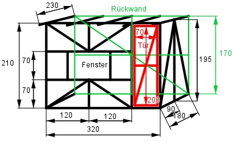

Aufgabe 191 Sie wollen das Gartenhaus bauen. Wie viel Meter Holzbalken brauchen Sie, wenn die Dicke vernachlässigt und mit einem Verschnitt von 8% gerechnet werden soll? Wie viel kostet das Holz, wenn 8 cm * 8 cm Balken verwendet werden und der m3 218,65 € kostet? Auf das 3 cm dicke Dach soll Teerpappe verlegt werden. Wie teuer wird es bei einem Verschnitt von 5%, wenn das Holz 228,75 €/m3 kostet und die Pappe 0,68 €/m2? Für die Außenverkleidung verwenden Sie Bretter, die pro m2 9,96 € kosten. Wie teuer ist die Verkleidung bei 5% Verschnitt?

Vorderseite lv: Satz von Pythagoras: l12 = 1202 + 702 = 19 300 |√ l1 = 138,9 cm ly = 2 * 320 cm + 2 * 240 cm + 4 * 70 cm + + 4 * 138,9 cm + 3 * 210 = 2 585,6 cm 2 * Rechteck = 2 * 95 m * (37,92 m – 33,42 m) = = 855 m2 2 * Seitenfläche lS: Satz von Pythagoras: l22 = 902 + 1952 = 46 125 |√ l2 = 214,8 cm lS = 2 * (2 * 214,8 cm + 195 cm + 180 cm) = = 1 609,2 cm1 Rückwand lR : Satz von Pythagoras: l32 = 3202 + 1702 = 131 300 |√ l3 = 362,4 cm lR = 362,4 cm + 3 * 320 cm + 3 * 170 cm = = 1 832,4 cm Tür lT: Satz von Pythagoras: l4 = 702 + 2002 = 44 900 √ l4 = 211,9 cm lT = 2 * 200 cm + 3 * 70 cm + 211,9 cm = 821,9 cm Dach lD: lD = 5 * 230 cm = 1 150 cm Gesamtlänge l: l = 2 585,6 cm + 1 609,2 cm + 1 832,4 cm + + 821,9 cm + + 1 150 cm = 7 999,1 cm = 80 m 8% Verschnitt berücksichtigt: l = 1,08 * 80 m = 86,4 m Kosten für das Holz KH: KH = 0,08 m * 0,08 m * 86,4 m * 218,65 €/m3 = = 120,90 € Kosten für das Dach KD: Holzvolumen VH unter Berücksichtigung des Verschnitts: VH = 1,05 * 2,3 m * 3,2 m * 0,03 m = 0,232 m3 Fläche der Dachpappe AD unter Berücksichtigung des Verschnitts: AD = 1,05 * 2,3 m * 3,2 m = 7,728 m2 KD = 0,232m3 * 228,75€/m3 + 7,728m2 * 0,68 €/m2 = KD = 58,33 € Zu verkleidende Fläche A: A = 3,2 m * 2,1 m + 3,2 m * 1,7 m + 2,1 m + 1,7 m19 m2 + 2 * --------------- * 1,8 m = 2 Kosten K Unter Berücksichtigung des Verschnitts: K = 1,05 * 19 m2 * 9,96 €/m2 = 198,70 €